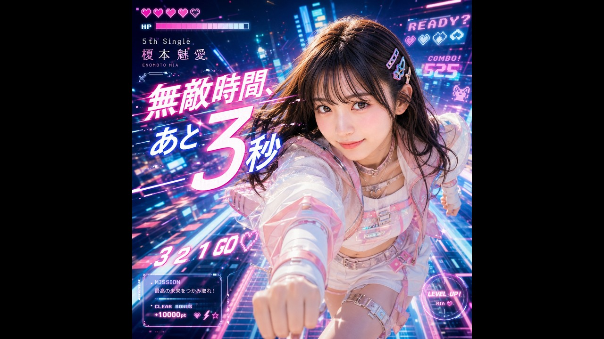
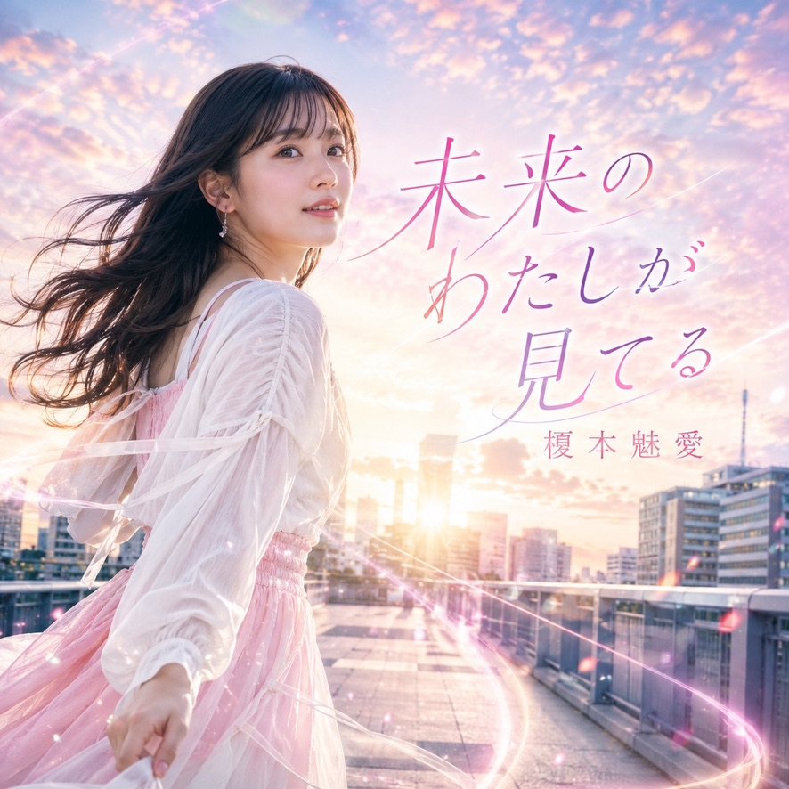

01
LEON VAIL · OFFICIAL AUDIO · 2026.10.05
BREAK THE VEIL
LEON VAIL「BREAK THE VEIL」のOfficial Audioを公開。
GATE EXPERIENCE
正式Ver.2は未登録です。新規候補の試聴は任意です。正式採用済みではありません。THE WORLDS BEYOND
ひとつの扉から、ひとつの世界へ。
あなたの心に響くアーティストを見つけて。
 記憶の庭朝霧しのぶ家族、記憶、人生の別れとぬくもりに寄り添う、日本の原風景。扉を開く WORLD 02 / 12
記憶の庭朝霧しのぶ家族、記憶、人生の別れとぬくもりに寄り添う、日本の原風景。扉を開く WORLD 02 / 12 星の回廊ASTERIA暗闇さえ星に変え、涙を光にする5つの星の女神たち。扉を開く WORLD 03 / 12
星の回廊ASTERIA暗闇さえ星に変え、涙を光にする5つの星の女神たち。扉を開く WORLD 03 / 12 光とコードECLYPSE光と闇が交わる近未来で、5つの運命がコードを書き換えていく。扉を開く WORLD 04 / 12
光とコードECLYPSE光と闇が交わる近未来で、5つの運命がコードを書き換えていく。扉を開く WORLD 04 / 12 恋の宮殿榎本魅愛恋する瞬間のときめき、迷い、勇気を、色彩豊かな物語として歌う。扉を開く WORLD 05 / 12
恋の宮殿榎本魅愛恋する瞬間のときめき、迷い、勇気を、色彩豊かな物語として歌う。扉を開く WORLD 05 / 12 誓いの聖堂神代煌牙大切な人を守る黒の騎士。静けさの奥にある誓いと、消えない記憶を描く。扉を開く WORLD 06 / 12
誓いの聖堂神代煌牙大切な人を守る黒の騎士。静けさの奥にある誓いと、消えない記憶を描く。扉を開く WORLD 06 / 12 ぬくもりの庭妃みちる過去の大切な人への感謝と、今の幸せを見つめる物語。扉を開く WORLD 07 / 12
ぬくもりの庭妃みちる過去の大切な人への感謝と、今の幸せを見つめる物語。扉を開く WORLD 07 / 12 深紅の魔界NOX人間の本能、社会の矛盾、夜の奥に潜む衝動を、黒い寓話として描く。扉を開く WORLD 08 / 12
深紅の魔界NOX人間の本能、社会の矛盾、夜の奥に潜む衝動を、黒い寓話として描く。扉を開く WORLD 08 / 12 祝祭の宮殿RANGILIインドと日本、地上と宇宙を鮮やかな色彩で結ぶ祝祭の世界。扉を開く WORLD 09 / 12
祝祭の宮殿RANGILIインドと日本、地上と宇宙を鮮やかな色彩で結ぶ祝祭の世界。扉を開く WORLD 09 / 12 再生の光RE:VIVE傷ついた心に光を戻し、もう一度立ち上がる瞬間を仲間と分かち合う。扉を開く WORLD 10 / 12
再生の光RE:VIVE傷ついた心に光を戻し、もう一度立ち上がる瞬間を仲間と分かち合う。扉を開く WORLD 10 / 12 月の杜VEILFANG白狼と九尾狐が、月の下で契りと運命を結ぶダークファンタジー。扉を開く WORLD 11 / 12鉄と焔の工房鉄髭 - TETSUHIGE -ファンタジー世界のドワーフをモチーフに、日本の職人、鉄、鍛冶、酒、義理、人情を感じさせる世界観。扉を開く WORLD 12 / 12静寂の舞台LEON VAIL美しく、危うくて、どこまでもロック。扉を開く
月の杜VEILFANG白狼と九尾狐が、月の下で契りと運命を結ぶダークファンタジー。扉を開く WORLD 11 / 12鉄と焔の工房鉄髭 - TETSUHIGE -ファンタジー世界のドワーフをモチーフに、日本の職人、鉄、鍛冶、酒、義理、人情を感じさせる世界観。扉を開く WORLD 12 / 12静寂の舞台LEON VAIL美しく、危うくて、どこまでもロック。扉を開く Official MV
榎本魅愛 / FULL MUSIC VIDEO
忘れたい恋ほど心が君へ向かう、榎本魅愛の失恋と再出発の物語。
Music × AI × Story · SUZUKA Official · Original AI Music Project
 Official MV
Official MV榎本魅愛 / 2026.10.01
SUZUKA Official
SUZUKAは、AIを制作支援に活用し、架空のAIアーティストによるオリジナル作品を公開しています。
01 / Latest release
LEON VAIL
Official Release
LEON VAIL · OFFICIAL AUDIO · 2026.10.05
LEON VAIL「BREAK THE VEIL」のOfficial Audioを公開。
ENOMOTO MIA
SUZUKA / MUSIC × AI × STORY


SUZUKA / MUSIC × AI × STORY
SUZUKA / MUSIC × AI × STORY
Listen to SUZUKA everywhere.


SUZUKA / MUSIC × AI × STORY
MEETS MUSIC, ARTISTS & STORIES.
榎本魅愛
榎本魅愛のシリーズ「MIA meets」。作品や公開情報は、正式に確認できた内容からお知らせします。
確認済みの次回公開予定はありません。
STREAMING RELEASE · 配信予定
STREAMING RELEASE · NOW STREAMING / 配信開始
STREAMING RELEASE · NOW STREAMING / 配信開始
STREAMING RELEASE · NOW STREAMING / 配信開始
STREAMING RELEASE · NOW STREAMING / 配信開始
STREAMING RELEASE · NOW STREAMING / 配信開始
STREAMING RELEASE · NOW STREAMING / 配信開始
STREAMING RELEASE · NOW STREAMING / 配信開始
STREAMING RELEASE · NOW STREAMING / 配信開始
STREAMING RELEASE · NOW STREAMING / 配信開始
STREAMING RELEASE · NOW STREAMING / 配信開始
STREAMING RELEASE · NOW STREAMING / 配信開始
STREAMING RELEASE · NOW STREAMING / 配信開始
STREAMING RELEASE · NOW STREAMING / 配信開始
STREAMING RELEASE · NOW STREAMING / 配信開始
STREAMING RELEASE · NOW STREAMING / 配信開始
STREAMING RELEASE · NOW STREAMING / 配信開始
STREAMING RELEASE · NOW STREAMING / 配信開始
STREAMING RELEASE · NOW STREAMING / 配信開始
02 / Next releases
公開済み作品と分けて、確認済みの公開予定をお知らせします。
NEW ARTIST02 / New artist
A SUZUKA Artist
光と闇が交わる瞬間、5つの運命が動き始める。
ダークで幻想的な世界観と、力強いボーカル、鋭いラップ、完成度の高いダンスパフォーマンスを融合させた5人組男性K-POPグループ。
SUZUKA / MUSIC × AI × STORY
03 / Artists
音楽レーベルSUZUKAに所属する、
それぞれの物語を持つアーティストたち。
光と闇が交わる瞬間、5つの運命が動き始める。
View profile ↗この声は、守るためにある。
View profile ↗
恋するすべての瞬間を、歌にする。
View profile ↗04 / Releases
SUZUKA所属アーティストの音楽作品。
鉄髭 - TETSUHIGE -「まだ、鉄は熱い」のOfficial Audioを公開。
鉄髭 - TETSUHIGE -「明日やる」のOfficial Audioを公開。
妃みちる「ウチら最強じゃね！」の公式プレビューを公開。配信予定日：2026年10月12日。


榎本魅愛「Eternity of Flower Words」は2026年09月26日よりストリーミング配信中。配信サービスは公式LinkCoreからご確認いただけます。
神代煌牙「何度生まれ変わっても - RE:BORN OATH -」は2026年09月26日よりストリーミング配信中。配信サービスは公式LinkCoreからご確認いただけます。
榎本魅愛「恋愛対象外 (仮)」は2026年09月26日よりストリーミング配信中。配信サービスは公式LinkCoreからご確認いただけます。
妃みちる「心に残る宝モノ」は2026年09月29日よりストリーミング配信中。配信サービスは公式LinkCoreからご確認いただけます。
榎本魅愛の5曲入りアルバム「恋するすべての瞬間」は2026年9月23日にストリーミング配信を開始しました。収録曲は「Over Drive」「キャラメ〜ル」「取り扱いチューい」「百万告」「花言葉」です。
榎本魅愛「また、君に恋をする。」は2026年9月23日にストリーミング配信を開始しました。
榎本魅愛「Over Drive」は2026-09-22ストリーミング配信開始。公式LinkCoreと作品の動画をご案内します。
榎本魅愛「September Blue」は2026-09-22ストリーミング配信開始。公式LinkCoreと作品の動画をご案内します。
神代煌牙「魔法が解けても ― Pumpkin Carriage ―」Official MVを公開中。
榎本魅愛「Hello Hello Halloween」Official MVを公開中。2026年9月21日のストリーミング配信情報も掲載します。
怒ってしまった夜も、眠れなかった朝も、すべては愛の中にある。妃みちるが、子育ての真ん中にいるママ、そして子育てを終えたすべてのママへ贈る楽曲。
白狼・孤闘と九尾狐・九羅護が、月下の契りと運命を歌うVEILFANGのデビューシングル。

介護の現場で誰かを支えながら、自分の夢も大切にするすべての人へ榎本魅愛が贈る応援歌。






榎本魅愛 × 神代煌牙「OUR KINGDOM」のSUZUKA公式作品ページ。
SUZUKA EXPLORER UPDATE
ランキング、特集、MV、世界観、Wikiから、82作品と12組のAIアーティストを横断できます。
公式MVと制作ビジュアル
12 ARTISTSSUZUKAの世界観と関係性
OFFICIAL GUIDE作品・用語・公開年表
06 / About SUZUKA
SUZUKA Officialは、AIを活用してオリジナルの音楽・MV・ビジュアル・歌詞・物語を制作・公開する音楽プロジェクトです。
SUZUKAは、AIを活用して音楽・ビジュアル・物語を制作するオリジナルAI音楽プロジェクトです。個性豊かな架空のAIアーティストたちが、それぞれの世界を歌います。
J-POP、K-POP、ダークポップ、ロック、バラードなど、さまざまな音楽表現を通して、アーティストごとに異なる物語と世界を届けます。
ABOUT SUZUKASUZUKA / MUSIC × AI × STORY
07 / News
デビュー、リリース、アーティスト情報。
Upcomingと最近の公開作品
31 LYRICS出典確認済みの公式歌詞
V3.1おすすめと実測値を分離
4 BOOKS公式Visual Collection
08 / Official YouTube
SUZUKA / MUSIC × AI × STORY
CREATOR PLATFORM 3.1